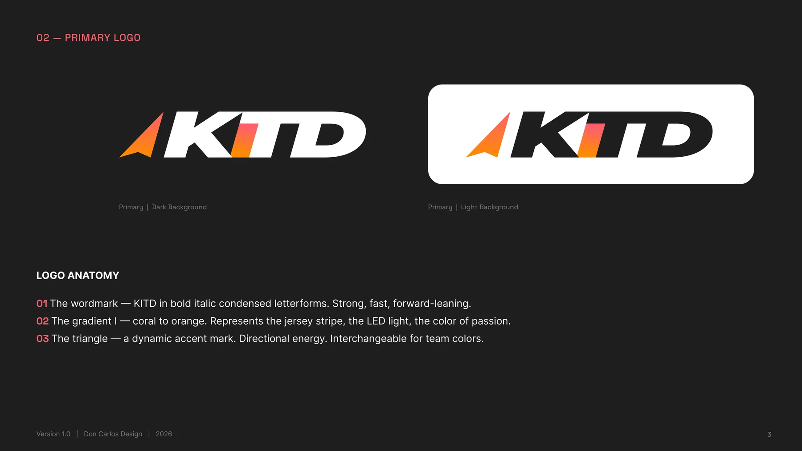
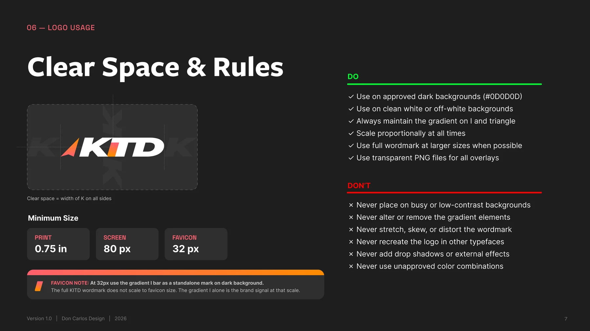
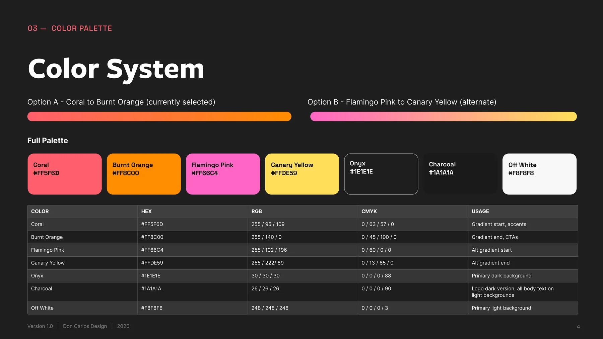
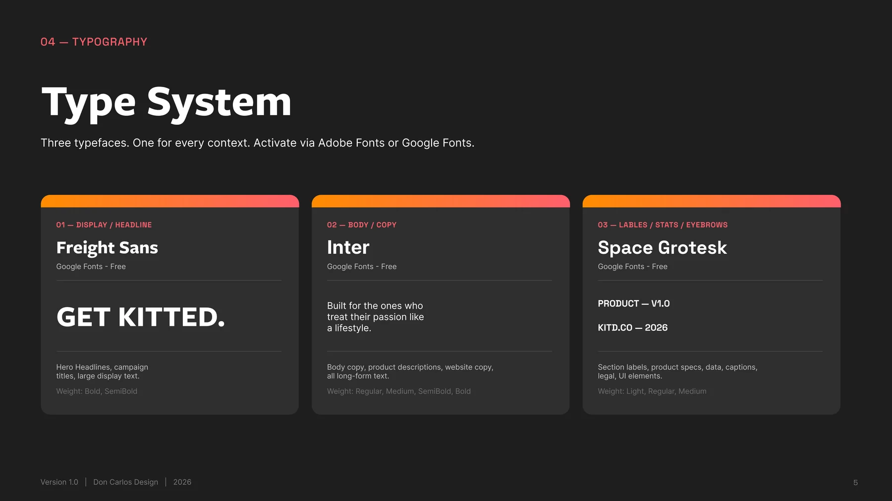
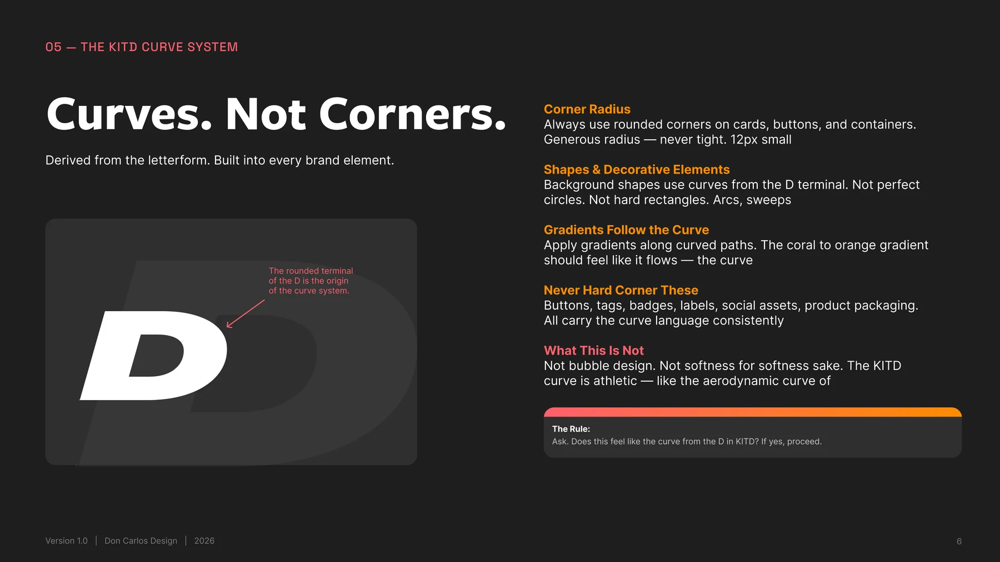
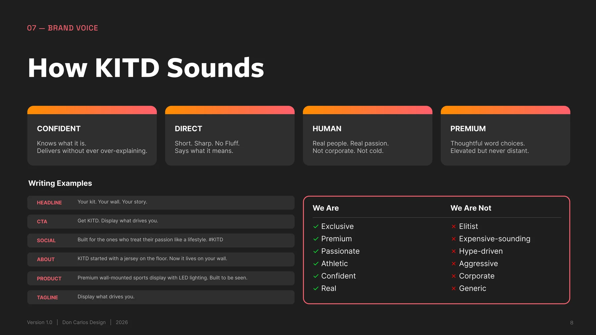

KITD: Display What Drives You
A full brand identity system for a premium wall-mounted sports gear display: brand strategy, logo system, and visual guidelines built before the product ever shipped.

The Problem
KITD started as an idea before it was a product: a wall-mounted display built for athletes and fans who don't want their kit stored in a bag, they want it seen. The brand needed to feel as confident and premium as the physical product it was introducing, before a single unit had shipped.
The Approach
I built the identity around one shape rule: every curve in the brand traces back to the rounded terminal of the "D" in the wordmark: arcs and sweeps, never bubble-soft, never hard-cornered. Paired it with a direct, human brand voice and a two-track color system so KITD could flex across dark and light surfaces without losing itself.
The Solution
A six-version logo system, a full brand guidelines document covering color, type, shape language and voice, and a plain-language file guide that lets the client hand assets to any vendor (printer, embroiderer, ad platform) without a single follow-up email.
Logo System
Six versions covering every surface the brand touches: dark, light, alternate colorway, and one-color for print and embroidery.
Primary: Dark
Primary: Light
Secondary: Dark
Secondary: Light
One Color: White
One Color: Black
Anatomy & Usage
The wordmark, the gradient "I," and the directional triangle: each element carries meaning, with clear rules for how far the logo can flex.


Color & Type
A coral-to-orange gradient carries the brand's confidence; flamingo pink to canary yellow gives it an alternate register without breaking the system.


Shape Language
The rounded terminal of the "D" became the origin point for every curve in the system: cards, buttons, and background shapes all trace back to it.

Brand Story & Voice
Confident, direct, human, premium: never corporate, never hype-driven.


Deliverables
Everything the client needs to put the brand into the world without a follow-up call.

Have a brand that needs an identity?
Let's build a system as confident as what you're making.